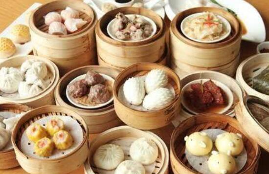

北京小吃
北京小吃是北京人津津乐道的一项北京特色，北京除了故宫、颐和园这样的人文建筑，大抵最可以吸引人的就是这北京小吃。延续至今的北京小吃有些已经流传有近千年的历史。在小吃烹调方式上更是煎炒烹炸烤涮烙样样齐全。舒乙以四个字概括北京小吃：“小吃大义”。北京小吃可 以参 考：豌豆黄、豆汁、焦圈、爆肚、驴打滚、艾窝窝、炒肝、炸灌肠、白水羊头、茶汤、它似蜜、萨其马、一品酥脆煎饼、干锅鸭头……过去经营小吃的基本都是家族单传，各有独特的风味，字号也是食品加姓的命名方式，例如爆肚冯、羊头马、年糕杨、奶酪魏等等。

广东小吃
食在广州，广州的美食小吃非常出名。除了十大小吃外，还有新起的老广记牛杂、广东老广记肠粉等，上过央视《舌尖上的中国》报道的广式竹升面，马岗鸡仔饼、皮蛋酥、冰肉千层酥、双皮奶、陈村粉、野鸡卷，均安煎鱼饼、龙江煎堆、肇庆裹蒸粽、广东月饼、酥皮莲蓉包、粉果、薄皮鲜虾饺及第粥、玉兔饺、干蒸蟹黄烧麦、高州捞粉、薯包籺、善莲蓬、高州根子牛腩粉、高州月饼、高州盐焗鸡、东岸豆饼角、柴枪粉、木薯籺、化橘红、化州糖水、水东鸭粥、电城鱼炸、沙琅芥菜包等。
成都小吃
成都风味独特、品类繁多的小吃，与其肴馔一样脍炙人口。从各色小面到抄手、饺子，从腌卤到凉拌冷食，从锅煎蜜饯到糕点汤元，从蒸煮烘烤到油酥油炸，琳琅满目，各味俱全，种类不下200种。成都的大街小巷，到处都能看到小吃店。“冒菜”是成都的特色菜，如这并不是一个菜，而是一种做法而已。用这种方法做出来的菜，就叫“冒菜”。“冒”字在这里是动词。准备一锅麻辣鲜香的汤汁，把菜用一个竹勺装好，一般一勺就是一份。在锅里煮熟，然后盛到碗里，顺便再舀一勺汤汁。冒菜的原料不限，这点和串串香类似，什么都可冒，什么都可上桌。有荤有素，不过据说冒菜火气太重，不宜常吃。冒菜和串串香的区别大概在于，冒菜的汤也可以喝，而串串香的锅底估计没人敢用勺子舀到嘴里去的。